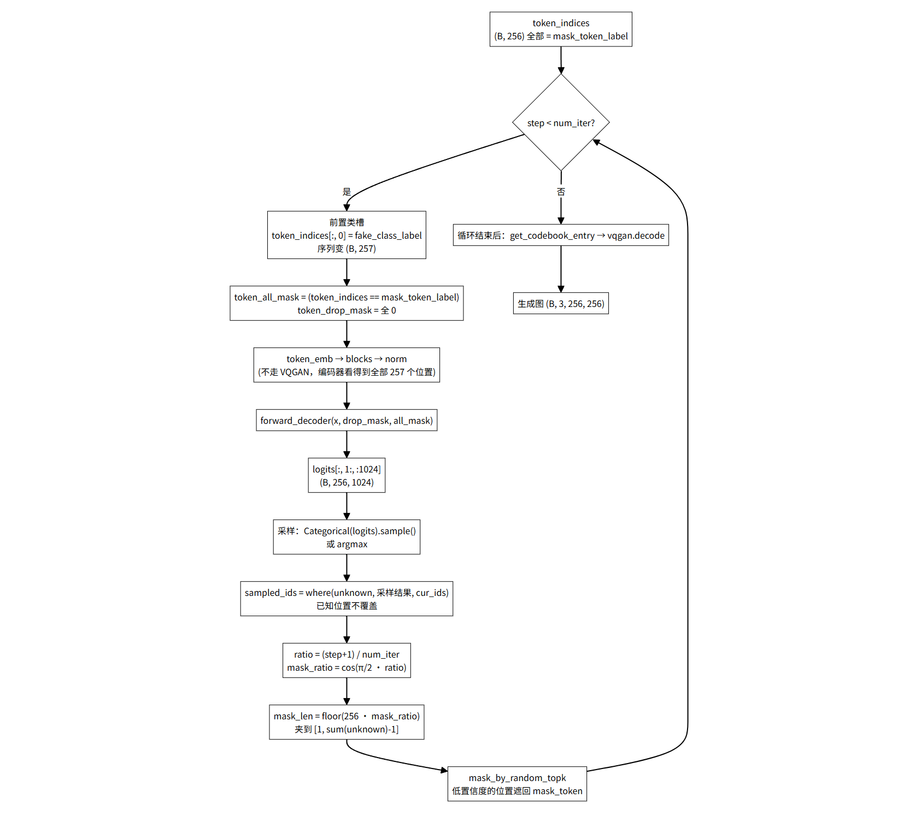
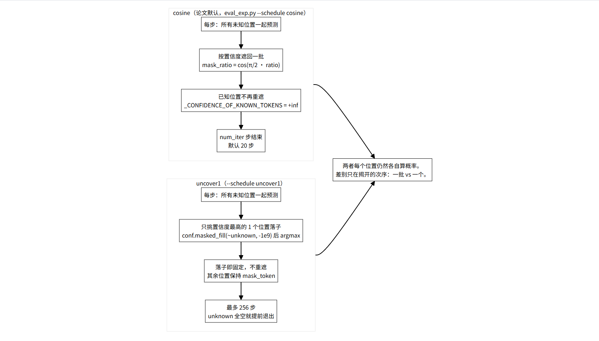
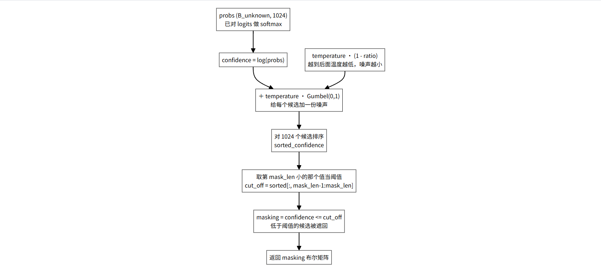
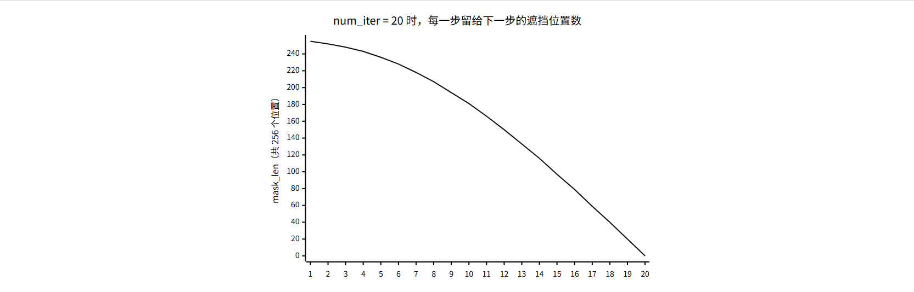
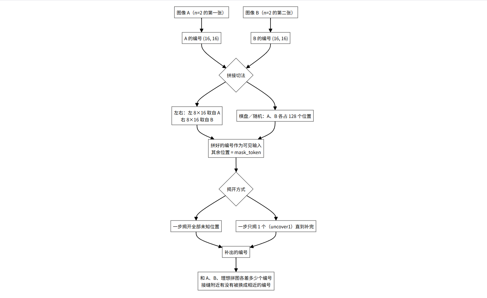
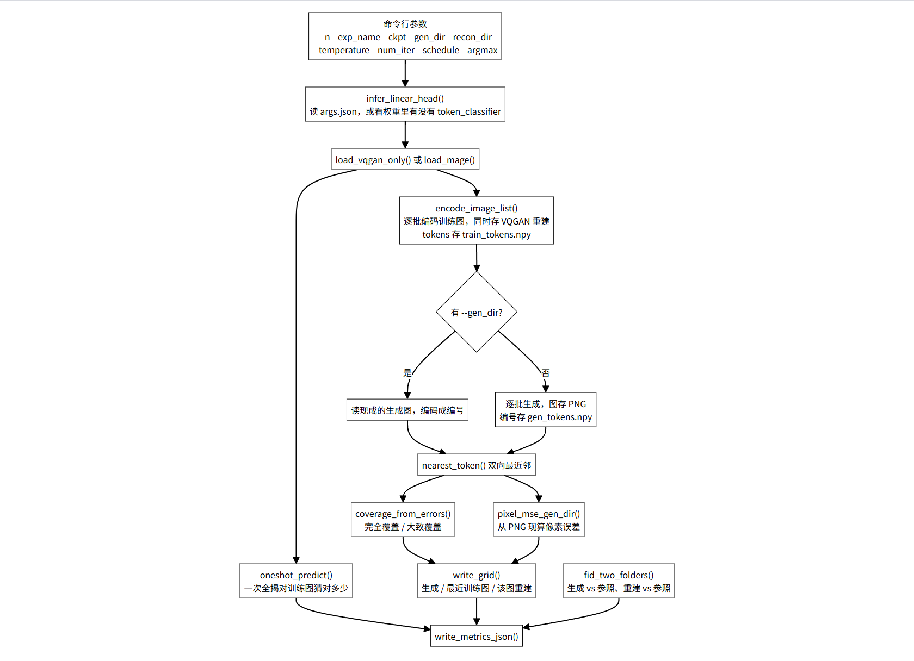
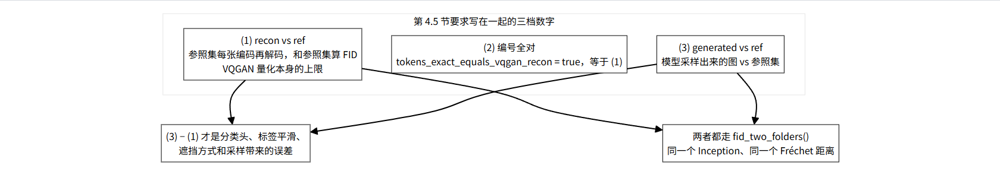

MAGE 源码逐读 · 第 2 篇 / 共 5 篇 · 生成与评测
代码文件：eval_exp.py 与 util/exp_*.py（从 mask_token 到 metrics.json）
半 A 半 B：16 × 16 的拼法
左 8×16 出自 A右 8×16 出自 B接缝两侧最容易被换成相近的编号A、B 固定为 n=2 的那两张图
系列 5 篇 · 进度
第 1 篇讲的是模型怎么把编号猜回来。这一篇讲另一半：怎么让它从「一个编号都看不见」开始，一步步把 256 个编号补出来，以及怎么把「生成得好不好」变成一组可以核对的数字。
两条线。生成线在 gen_img_uncond.py（论文的独立生成脚本）和 eval_exp.py 的 generate_batch 里；评测线在 util/exp_fid.py 和 util/exp_metrics.py 里。评测线要做的事，是把 README 第 2.2 节列的那四样——FID、覆盖率、平均匹配误差、图像质量——逐一落成文件。
这一篇和 README 三处直接对应：第 2.2 节的指标定义、第 4.3 节的半 A 半 B、第 4.5 节的量化误差。代码里每一个数字都能指回那几节的要求，反过来也一样。
oneshot）：256 个位置全是 mask_token，模型只前向一次，取最大概率。这不是采样，是探测模型「一眼看全部」能猜对多少。outputs/ 和 data/，跑在集群上；文里的图都是从代码逻辑和公式直接推出来的，不是结果截图。eval_exp.py 513–536
同一个仓库里有两套采样循环。gen_img_uncond.py 是论文的独立生成脚本，界面就三个旋钮：温度、步数、生成多少张。eval_exp.py 里那一套多了一个开关，把「怎么揭」也变成参数。
if schedule == 'uncover1': gen_iters = 256 gen_note = ( 'uncover1: each step commits the most-confident unknown position; ' 'committed ids stay visible (no remask). Token sample/argmax matches ' '--sample/--argmax. Not the paper cosine remask sampler.' ) else: gen_iters = args.num_iter
这段注释把两种循环的区别写得很直白：uncover1 每一步只把最有把握的那一个位置定下来，定下来就不再改；论文那套是每一步按置信度遮回一批，已经猜对的位置也可能被重新盖住。

值得留意的是编码器那一步。生成的时候没有任何位置被「丢掉」，token_drop_mask 是整个零张量，所以编码器看到的是类槽加上全部 256 个位置——没被遮的是真实编号，被遮的是 mask_token。这和第 1 篇里训练时的行为不一样：训练时编码器固定丢掉一半的位置，生成时一个都不丢。

README 第 4.3 节专门写了一句：论文默认的 12 步生成会把已经猜对的位置再遮回去，那不是半 A 半 B 实验。--schedule uncover1 就是为这件事准备的开关，它不做重遮，所以「一步只揭一个」这条路线才做得干净。拿默认的 12 步生成去代替半 A 半 B，测到的会是重遮带来的抖动。
eval_exp.py 276–282
遮回哪些位置，由一个九行的函数决定。两个版本（gen_img_uncond.py 和 eval_exp.py）内容一致，只是设备写法不同。
def mask_by_random_topk(mask_len, probs, temperature=1.0): mask_len = mask_len.squeeze() confidence = torch.log(probs) + torch.Tensor( temperature * np.random.gumbel(size=probs.shape)).to(probs.device) sorted_confidence, _ = torch.sort(confidence, axis=-1) cut_off = sorted_confidence[:, mask_len.long() - 1:mask_len.long()] return confidence <= cut_off
log(probs) 把概率换成对数概率。概率越低的候选，对数越负，排到后面越容易被遮。mask_len 小的值当阈值，再拿阈值去筛。这样输出是一个布尔矩阵，形状和输入一致，不会因为并列值多选出或少选出几个。temperature * (1 - ratio)。越接近结束，温度越低，噪声越小，最后几步基本按置信度落子。
gen_img_uncond.py 里用 .cuda() 写死了设备，在 eval_exp.py 里改成了 .to(probs.device)。后者才能在 CPU 上跑通——测试或冒烟脚本会用到。eval_exp.py 285–324
把 generate_batch 的循环体按执行顺序摊开，一共六件事。
for step in range(num_iter): cur_ids = token_indices.clone().long() logits = mage_codebook_logits(model, cur_ids) if argmax: sampled_ids = torch.argmax(logits, dim=-1) else: sampled_ids = torch.distributions.categorical.Categorical( logits=logits).sample() unknown_map = (cur_ids == mask_token_id) sampled_ids = torch.where(unknown_map, sampled_ids, cur_ids) ratio = 1.0 * (step + 1) / num_iter mask_ratio = np.cos(math.pi / 2.0 * ratio)
cur_ids 存一份本轮开始时的编号。后面用它算 unknown_map，也就是「这一步之前还看不见的位置」。mage_codebook_logits 把当前编号补上类槽、算 token_all_mask，走一遍编码器和解码器，返回 (B, 256, 1024)。注意这里只截前 1024 类，类别编号和 mask 编号的 logits 全丢掉。--argmax 决定：argmax 是每步取最大概率，Categorical(...).sample() 是按概率随机抽。README 第 2.2 节要求把「取最大概率还是随机采样」写进 metrics.json，对应的就是这一行。torch.where(unknown_map, sampled_ids, cur_ids) 保证已经知道的位置不被新预测覆盖。这一句让「已知」变成单向的。ratio 从 1/num_iter 走到 1，mask_ratio 是它的余弦。这是论文的调度：开头几乎全遮，结尾几乎全揭。
mask_len = torch.tensor(
[np.floor(unknown_number_in_the_beginning * mask_ratio)],
device=device)
mask_len = torch.maximum(
torch.tensor([1.0], device=device),
torch.minimum(torch.sum(unknown_map, dim=-1, keepdims=True) - 1, mask_len))unknown_number_in_the_beginning，写死的 256，不是当前还剩多少未知。所以调度曲线不受中途状态影响，每一步留多少完全由步数决定。sum(unknown) - 1：这一步至少得揭掉一个位置，否则循环可能原地打转。sampled_ids 才是完整结果。token_indices 每轮都在被遮回和揭开的反复中变化，但最终拿去解码的是 sampled_ids——那个没被重新遮过的版本。两行代码差一个字，含义完全不同。eval_exp.py 327–359
这个循环短，但把「不重遮」这件事做到了底。
for step in range(256): unknown = token_indices == mask_token_id if not bool(unknown.any()): break logits = mage_codebook_logits(model, token_indices) pred = torch.distributions.categorical.Categorical(logits=logits).sample() probs = torch.nn.functional.softmax(logits, dim=-1) conf = torch.gather(probs, dim=-1, index=pred.unsqueeze(-1)).squeeze(-1) conf = conf.masked_fill(~unknown, -1.0e9) pick = conf.argmax(dim=-1) token_indices = token_indices.clone() token_indices[batch_idx, pick] = pred[batch_idx, pick]
unknown，第 3–4 行在未知清空时提前退出，所以 256 只是上界，实际步数等于需要填的位置数。conf 取出被选中编号的概率，是「这一步有多有把握」的度量。masked_fill(~unknown, -1e9) 把已经揭开的那些位置压到负无穷，argmax 就只能在未知位置里挑。这一句替代了排序，是两种采样器在实现上最直观的分野。pred[batch_idx, pick]，也就是那一步真正抽到的编号，而不是最大概率的编号——--sample 和 --argmax 的区别在这里同样生效。
第 4.3 节的两种揭法就是这两种循环。uncover1 让「补出来的编号更像 A 还是比较像 B」这个问题变得可以观察：一步一个位置地走，接缝附近如果发生替换，能看出是哪一步换的。默认的 cosine 循环一次揭一批，接缝的信息混在一整批里，看不出来。
eval_exp.py 237–255
README 第 2.2 节要求单独报一栏「一次揭开全部遮挡时，对训练图猜对了多少编号」。这个函数就是那一栏。
def oneshot_predict(model, images): """All positions masked, nothing dropped, argmax over codebook.""" bsz = images.size(0) mask_id = model.mask_token_label token_indices = mask_id * torch.ones(bsz, 256, device=device) token_indices = torch.cat( [torch.zeros(bsz, 1, device=device), token_indices], dim=1) token_indices[:, 0] = model.fake_class_label token_all_mask = torch.ones_like(token_indices, dtype=torch.float32) token_all_mask[:, 0] = 0 token_drop_mask = torch.zeros_like(token_indices, dtype=torch.float32) logits = model.forward_decoder(x, token_drop_mask, token_all_mask) return logits[:, 1:, :model.codebook_size].argmax(dim=-1)
images.size(0) 拿批量大小——模型是无条件的，生成时确实不依赖任何输入图。token_all_mask 全 1、类槽位设 0，token_drop_mask 全 0。编码器看到类槽加 256 个 mask 编号。argmax 而不是采样。这里要的是「模型最看好哪个」，不是「抽一个看看」。eval_exp.py 拿它和 encode_tokens(vqgan, batch) 比，逐位算准确率。所以这一栏测的是相对自己，和最近邻那一栏不是一回事。probe_file = args.probe_list or os.path.join(splits_dir, 'probe.txt') if os.path.isfile(probe_file) and args.n >= 1000: probe_rel = [p for p in read_list(probe_file) if p in set(rel_paths)] else: probe_rel = list(rel_paths)
splits/probe.txt 是固定的 8 张：A、B，加 n=10 里接下来的 6 张。n 小的时候直接用全部训练图；n 到 1000 以上，训练集太大，就用这 8 张固定探针。if p in set(rel_paths) 这一步保证探针里的图确实在这个 n 的子集里——子集是嵌套的，所以不会漏。
util/exp_data.py 全文
这个模块只有 145 行，但实验里所有「固定住不让动」的东西都在这里。
N_VALUES = (1, 2, 10, 100, 1000, 10000) SPLIT_SEED = 0 IMAGE_A = 'train/n01443537/images/n01443537_0.JPEG' IMAGE_B = 'train/n01629819/images/n01629819_0.JPEG' SOURCE_NATIVE_SIZE = 64 TRAIN_EVAL_SIZE = 256 FID_COMPARABLE_TO_PAPER = False DEFAULT_TEMPERATURE = 6.0 DEFAULT_NUM_ITER = 20 DEFAULT_ARGMAX = False DEFAULT_GEN_SEED = 0 APPROX_COVER_MAX_ERRORS = 16 GRID_N = 8
manifest.json 里的金鱼和蝾螈。n=2 的两张就是它们，半 A 半 B 的 A、B 也是它们。README 第 2.1 节要求「n=2 的两张固定为半 A 半 B 的 A、B，不要另找两张」——用一个常量把这件事钉死。FID_COMPARABLE_TO_PAPER = False 是 README 那句警告的代码版本：Tiny 原图 64×64，放大到 256 之后算出来的 FID 不能和论文的 ImageNet-256 数字比。它会被写进 metrics.json 的 source 字段，跟着结果一起走。DEFAULT_TEMPERATURE = 6.0、DEFAULT_NUM_ITER = 20——注意这和 gen_img_uncond.py 里写死的 4.5 / 12 不一样。后者是论文脚本原本的默认值，这里用的是 README.official.md 里类无条件生成那条命令的参数。APPROX_COVER_MAX_ERRORS = 16 就是 README 说的 6.25%（16/256），「大致覆盖」的阈值。class ImageListDataset(Dataset): """RGB images from a frozen relative-path list. Label is unused (always 0).""" def __getitem__(self, index): img = Image.open(self.paths[index]).convert('RGB') if self.transform is not None: img = self.transform(img) return img, 0 class TokenIndexDataset(Dataset): """Precomputed VQGAN codebook ids [N, 256]. Label unused (always 0)."""
两个类都返回 (数据, 0)。ImageListDataset 在构造时就把缺失的图检查掉，缺一张就报错并给出第一条缺失路径，而不是等训练跑到一半才炸。生成和评测都是无条件任务，标签确实没用，写个 0 是为了兼容 DataLoader 的接口。
def default_num_images(n): n = int(n) if n >= 10000: return 50000 return max(1000, 50 * n)
生成张数的规则。n=1、2、10 都是 1000 张，n=100 是 5000 张，n=1000 和 10000 是 50000 张。和 manifest.json 里那张表逐项对应。小 n 之所以要 1000 张而不是 50 张，是因为 FID 的协方差估计需要足够的样本，生成张数太少这个数字本身就不稳。
util/exp_metrics.py 34–63
覆盖率和匹配误差是同一个操作的两个方向。这个函数被调用两次，参数顺序一换，含义就变了。
for qi in range(0, nq, q_batch): q = query[qi:qi + q_batch] local_min = np.full(len(q), 256, dtype=np.int32) for gi in range(0, gallery.shape[0], g_batch): g = gallery[gi:gi + g_batch] err = (q[:, None, :] != g[None, :, :]).sum(axis=-1) idx = err.argmin(axis=1) val = err[np.arange(len(q)), idx] better = val < local_min local_min[better] = val[better] local_nn[better] = idx[better] + gi
(q[:, None, :] != g[None, :, :]).sum(-1) 一次算出一整块距离矩阵：形状 (q_batch, g_batch, 256)，逐位不等再沿最后一维求和，就是 256 维的 Hamming 距离。q_batch=32、g_batch=4096。50000 张生成图对 50000 张训练图是 25 亿对，不分块的话那个中间张量直接把显存或内存撑爆。local_nn[better] = idx[better] + gi 里的 + gi 容易漏。idx 是块内下标，加回块偏移才是全局下标。min_err 初始值 256，正好是最大可能的错位数，所以任何真实距离都会覆盖它；一张都对不上的图会留下 256 这个值。
train_to_gen_err, _ = nearest_token(train_tokens, gen_tokens) gen_to_train_err, gen_nn = nearest_token(gen_tokens, train_tokens)
两行方向相反。第一行问「每张训练图在生成结果里能不能被找到」——对应覆盖率。第二行问「每张生成图离最近的训练图有多远」，顺便把最近邻下标 gen_nn 留下来给拼图用。
util/exp_metrics.py 66–82、144–148
def coverage_from_errors(train_to_gen_errors, approx_max=APPROX_COVER_MAX_ERRORS): err = np.asarray(train_to_gen_errors) n = max(int(err.size), 1) return { 'exact': float((err == 0).sum()) / n, 'approx': float((err <= approx_max).sum()) / n, 'approx_token_errors_max': int(approx_max), 'n_train': int(err.size), }
两个比例。exact 是完全覆盖：在生成集合里有某一张，256 个编号一个不差。小 n 上这个数可能非零，大 n 上接近 0。approx 放宽到最多错 16 个位置，README 说这是 6.25%。n 取 max(size, 1) 是为了空输入不除以零。
def token_match_frac(gen_to_train_errors): err = np.asarray(gen_to_train_errors, dtype=np.float64) if err.size == 0: return 0.0 return float((err / 256.0).mean()) def pixel_mse_uint8(a, b): return float(np.mean((a - b) ** 2) / (255.0 ** 2))
token_match_frac 是编号口径的匹配误差：先除以 256 换成比例，再对所有生成图取平均。分母写死 256，因为编号图固定 16×16。pixel_mse_uint8 除以 255²，把均方误差归一化到 [0, 1]。两处都写死归一化因子，是为了不同批次的数字能直接比较。train_recons 这个变量——训练图先编码再解码的结果，才拿去算误差。util/exp_metrics.py 96–141
第 4.1 和 4.2 节要验证的说法是：点积分类头加标签平滑时，模型学的不是「这个位置必须是编号 y」，而是「隐向量靠近 y 附近的一簇词向量」。验证方式是量一量猜错的那些编号，在词向量空间里离正确答案有多近。
pred_e = emb[pred[wrong]] gt_e = emb[gt[wrong]] out['wrong_cosine_distance'] = float(_pairwise_cosine_distance(pred_e, gt_e).mean()) out['wrong_euclidean'] = float(_pairwise_euclidean(pred_e, gt_e).mean()) rng = np.random.RandomState(seed) rand = rng.randint(0, vocab_size, size=n_wrong) collide = rand == gt[wrong] rand[collide] = (rand[collide] + 1) % vocab_size
emb 传进来的是 model.token_emb.word_embeddings.weight，只取前 1024 行（codebook 那部分）。用的是词嵌入本身，而不是解码器输出的隐向量——因为「相近」的定义就建立在这张表上。collide 那两行处理抽中正确答案的情况，把它挪到下一个编号，保证基线里没有正确答案。n_wrong == 0 时函数直接返回，所有距离留 None，并把 note 改成「no wrong tokens; distances undefined」。小 n 上模型把图全背下来时，这里会真的出现全对的情况。util/exp_metrics.py 166–197
README 第 2.2 节要求每个 n、每种设置留一张固定拼图，至少 8 张生成图，加各自的最近训练图，加那张训练图的 VQGAN 重建。
for i in range(n_show): j = int(nn_index[i]) if i < len(nn_index) else 0 g = to_uint8_image(gen_images[i]) t = to_uint8_image(train_images[j]) r = to_uint8_image(train_recons[j]) panels.append((g, t, r)) labels.append(('gen {}'.format(i), 'train {}'.format(j), 'vqgan {}'.format(j)))
j = nn_index[i] 用的就是 nearest_token 返回的最近邻下标。所以第一列第 i 行和第二列第 j 行是编号空间里真正最近的一对，不是随便配的。labels 写成 gen 0 / train 7 / vqgan 7 这种形式，下标能对上。看拼图的人不用去翻 json 就知道哪张对应哪张。每行上方留 22px 画标签条，画布先铺白底再贴三张图。行数取 min(GRID_N, 生成图数, 最近邻数)——生成图少于 8 张时不会留出空行。
README 那句「不要只留最好看的一张」在代码里对应的是：拼图取的是前 8 张生成图（gen_preview 里按生成顺序攒的前 8 张），不是按质量挑的。这是刻意的——如果按分数挑，拼图就失去诊断价值了。
util/exp_fid.py 全文
第 4.5 节要求：每个报 FID 的设置，三个数字写在一起。代码层面这件事的落点是——生成 FID 和重建 FID 走的是同一个函数。
def fid_two_folders(dir_a, dir_b, device, batch_size=FID_BATCH_SIZE, num_workers=1, extractor=None, dims=FID_DIMS): """Same function for generated-vs-ref and VQGAN-recon-vs-ref.""" if extractor is None: extractor = build_inception(device, dims) fa = features_from_folder(dir_a, device, batch_size, num_workers, extractor, dims) fb = features_from_folder(dir_b, device, batch_size, num_workers, extractor, dims) mu1, s1 = stats_from_features(fa) mu2, s2 = stats_from_features(fb) return frechet_distance(mu1, s1, mu2, s2)
dims=2048 对应 InceptionV3.BLOCK_INDEX_BY_DIM 里pool3 那一层，batch_size=50 和 LGANs-TT realdata.py 里的默认值一致。implementation 这个字符串会被原样写进 metrics.json，说明这个数字是谁算的。batch_size > len(files) 时会先降到文件数，避免小参照集上 DataLoader 报错。covmean, _ = linalg.sqrtm(sigma1.dot(sigma2), disp=False) if not np.isfinite(covmean).all(): offset = np.eye(sigma1.shape[0]) * eps covmean = linalg.sqrtm((sigma1 + offset).dot(sigma2 + offset)) if np.iscomplexobj(covmean): if not np.allclose(np.diagonal(covmean).imag, 0, atol=1e-3): raise ValueError('Imaginary component {}'.format(np.max(np.abs(covmean.imag)))) covmean = covmean.real
矩阵平方根那一段是 FID 实现里最容易出问题的地方。协方差矩阵可能接近奇异，sqrtm 会返回非有限值或者复数。这里先加一个 1e-6 的对角扰动重算，再把虚部检查一遍——虚部真的超过了 1e-3 才报错，否则只取实部。这套兜底和 pytorch-fid 上游一致。
util/exp_metrics.py 18–31、280–297
所有评测的出口都是同一个 json。写之前先校验，缺字段直接抛异常。
REQUIRED_METRIC_KEYS = (
'n', 'exp_name', 'image_list', 'A', 'B', 'source',
'generation', 'fid', 'coverage', 'match_error', 'oneshot_vs_self', 'grid',
)
def write_metrics_json(metrics, path):
missing = [k for k in REQUIRED_METRIC_KEYS if k not in metrics]
if missing:
raise ValueError('metrics.json missing keys: {}'.format(missing))
gen = metrics['generation']
for k in ('temperature', 'num_iter', 'argmax', 'num_images'):
if k not in gen:
raise ValueError('generation missing {}'.format(k))
fid = metrics['fid']
if 'generated_vs_ref' not in fid or 'vqgan_recon_vs_ref' not in fid:
raise ValueError('fid must include generated_vs_ref and vqgan_recon_vs_ref')metrics = {
'n': int(n),
'exp_name': exp_name,
'image_list': image_list,
'n_train': len(train_rel_paths),
'train_paths': list(train_rel_paths),
'A': IMAGE_A,
'B': IMAGE_B if int(n) >= 2 else None,
'source': source_info(),
'generation': {...},
'fid': {...},
'coverage': coverage,
'match_error': match_error,
'oneshot_vs_self': oneshot_vs_self,
'wrong_token_embed': wrong_token_embed,
'grid': grid_path,
}'B': IMAGE_B if int(n) >= 2 else None——n=1 时没有第二张图，字段留 None 而不是编一个路径。'tokens_exact_equals_vqgan_recon': True 写在 fid 段里，把第 4.5 节第 (2) 档那个论断固定成一条断言：编号全对时，像素结果就是重建图，FID 等于重建 FID。generation 段还有 schedule、uncover_per_step、remask 三个字段，把「用的哪个采样器」也钉住。repeats_allowed: True 说明生成张数里允许有重复。setting（这属于四种组合里的哪一种）和 profile（编码、生成、覆盖率、FID 各花了多少秒）。后者在做时间估算时有用。
eval_exp.py 216–234、381–421
n=1000 和 n=10000 要生成 50000 张图。把 50000 张 256×256 的浮点张量放在内存里是 50000×3×256×256×4 字节，接近 40 GB。代码里到处都在绕开这件事。
reconstruct_folder 的 docstring 直接写着 Do not load the whole folder.，逐批编码解码，图直接写盘，不留在内存。encode_image_list 也一样，只把编号数组攒下来（int 类型，50000×256 才 12 MB 出头），重建图写进 train_vqgan_recon/ 目录。pixel_mse_gen_dir 是从 PNG 现读的：读一张算一张，算完就丢。所以它能在 50000 张上跑完而不爆内存。gen_preview 攒着，到 8 张就停止追加。剩下的图只在盘上，不进内存。def pixel_mse_gen_dir(gen_dir, n_gen, train_recons, gen_nn): """Match-error pixels from saved PNGs so 50k gens stay off the heap.""" mses = [] for i in range(int(n_gen)): arr = np.array(Image.open(gen_png_path(gen_dir, i)).convert('RGB')) mses.append(pixel_mse_uint8(arr, train_recons[int(gen_nn[i])]))
train_recons 留在内存里是因为它最多只有训练集的规模。n=10000 时是 10000 张 256×256×3 的 uint8，约 2 GB，比生成那 50000 张小一个数量级。用一个可接受的常驻量换掉逐张读盘的开销。
def cached_shared_recon_fid(recon_dir): """Reuse outputs/_ref/metrics.json when eval points at the shared recon dir.""" shared = os.path.normpath('outputs/_ref/tiny_val256_vqgan_recon') if os.path.normpath(recon_dir) != shared: return None value = (metrics.get('fid') or {}).get('vqgan_recon_vs_ref')
重建 FID 只取决于参照集和 VQGAN 权重，和 n、和训练出来的模型都无关。所以哪怕只计算一次，结果对每个 n 都成立。这里用路径比对来判断「你指向的是不是那个共享目录」，是的话就直接读现成的数字，不再跑一遍 Inception。路径用 os.path.normpath 归一化过，写成 outputs/_ref/... 还是 ./outputs/_ref/... 都能命中。
mask_len 的基数是写死的 256，不是当前未知数；上下界保证每步至少揭一个、至少留一个。mask_by_random_topk 的随机性来自 Gumbel 噪声，温度随进度衰减，最后几步接近按置信度落子。oneshot_predict 提供，全遮一次前向取最大概率，和最近邻是两件事，分开报。metrics.json 写之前先校验，采样参数和两个 FID 缺一个就落不了盘。图 1 · cosine 采样器一次完整生成
flowchart TD
START["token_indices<br/>(B, 256) 全部 = mask_token_label"]
LOOP{"step < num_iter?"}
CLS["前置类槽<br/>token_indices[:, 0] = fake_class_label<br/>序列变 (B, 257)"]
MASK["token_all_mask = (token_indices == mask_token_label)<br/>token_drop_mask = 全 0"]
ENC["token_emb → blocks → norm<br/>(不走 VQGAN，编码器看得到全部 257 个位置)"]
DEC["forward_decoder(x, drop_mask, all_mask)"]
LOG["logits[:, 1:, :1024]<br/>(B, 256, 1024)"]
PICK["采样：Categorical(logits).sample()<br/>或 argmax"]
KEEP["sampled_ids = where(unknown, 采样结果, cur_ids)<br/>已知位置不覆盖"]
RATIO["ratio = (step+1) / num_iter<br/>mask_ratio = cos(π/2 · ratio)"]
LEN["mask_len = floor(256 · mask_ratio)<br/>夹到 [1, sum(unknown)-1]"]
RE["mask_by_random_topk<br/>低置信度的位置遮回 mask_token"]
DECODE["循环结束后：get_codebook_entry → vqgan.decode"]
IMG["生成图 (B, 3, 256, 256)"]
START --> LOOP
LOOP -->|是| CLS --> MASK --> ENC --> DEC --> LOG --> PICK --> KEEP --> RATIO --> LEN --> RE
RE --> LOOP
LOOP -->|否| DECODE --> IMG图 2 · 两种采样器的差别只在揭开次序
flowchart LR
subgraph COS["cosine（论文默认，eval_exp.py --schedule cosine）"]
C1["每步：所有未知位置一起预测"]
C2["按置信度遮回一批<br/>mask_ratio = cos(π/2 · ratio)"]
C3["已知位置不再重遮<br/>_CONFIDENCE_OF_KNOWN_TOKENS = +inf"]
C4["num_iter 步结束<br/>默认 20 步"]
C1 --> C2 --> C3 --> C4
end
subgraph UN["uncover1（--schedule uncover1）"]
U1["每步：所有未知位置一起预测"]
U2["只挑置信度最高的 1 个位置落子<br/>conf.masked_fill(~unknown, -1e9) 后 argmax"]
U3["落子即固定，不重遮<br/>其余位置保持 mask_token"]
U4["最多 256 步<br/>unknown 全空就提前退出"]
U1 --> U2 --> U3 --> U4
end
NOTE["两者每个位置仍然各自算概率。<br/>差别只在揭开的次序：一批 vs 一个。"]
COS --> NOTE
UN --> NOTE图 3 · mask_by_random_topk：先加噪再取阈值
flowchart TD
P["probs (B_unknown, 1024)<br/>已对 logits 做 softmax"]
LOGP["confidence = log(probs)"]
GUM["＋ temperature · Gumbel(0,1)<br/>给每个候选加一份噪声"]
SORT["对 1024 个候选排序<br/>sorted_confidence"]
CUT["取第 mask_len 小的那个值当阈值<br/>cut_off = sorted[:, mask_len-1:mask_len]"]
MASK["masking = confidence <= cut_off<br/>低于阈值的候选被遮回"]
OUT["返回 masking 布尔矩阵"]
P --> LOGP --> GUM --> SORT --> CUT --> MASK --> OUT
TEMP["temperature · (1 - ratio)<br/>越到后面温度越低，噪声越小"] --> GUM图 4 · mask_len = floor(256 · cos(π/2 · (step+1)/num_iter))
xychart-beta
title "num_iter = 20 时，每一步留给下一步的遮挡位置数"
x-axis ["1", "2", "3", "4", "5", "6", "7", "8", "9", "10", "11", "12", "13", "14", "15", "16", "17", "18", "19", "20"]
y-axis "mask_len（共 256 个位置）" 0 --> 256
line [255, 252, 248, 243, 236, 228, 218, 207, 194, 181, 166, 150, 133, 116, 97, 79, 59, 40, 20, 0]图 5 · 半 A 半 B 的两种切法与两种揭法
flowchart TD
A["图像 A（n=2 的第一张）"]
B["图像 B（n=2 的第二张）"]
TA["A 的编号 (16, 16)"]
TB["B 的编号 (16, 16)"]
STITCH{"拼接切法"}
LR["左右：左 8×16 取自 A<br/>右 8×16 取自 B"]
CB["棋盘／随机：A、B 各占 128 个位置"]
MASKED["拼好的编号作为可见输入<br/>其余位置 = mask_token"]
WAY{"揭开方式"}
ONE["一步揭开全部未知位置"]
STEP["一步只揭 1 个（uncover1）直到补完"]
OUT["补出的编号"]
CMP["和 A、B、理想拼图各差多少个编号<br/>接缝附近有没有被换成相近的编号"]
A --> TA --> STITCH
B --> TB --> STITCH
STITCH --> LR --> MASKED
STITCH --> CB --> MASKED
MASKED --> WAY
WAY --> ONE --> OUT
WAY --> STEP --> OUT
OUT --> CMP图 6 · eval_exp.py 的主流程
flowchart TD
ARGS["命令行参数<br/>--n --exp_name --ckpt --gen_dir --recon_dir<br/>--temperature --num_iter --schedule --argmax"]
DETECT["infer_linear_head()<br/>读 args.json，或看权重里有没有 token_classifier"]
VQ["load_vqgan_only() 或 load_mage()"]
ENC["encode_image_list()<br/>逐批编码训练图，同时存 VQGAN 重建<br/>tokens 存 train_tokens.npy"]
GEN{"有 --gen_dir?"}
LOAD["读现成的生成图，编码成编号"]
SAMPLE["逐批生成，图存 PNG<br/>编号存 gen_tokens.npy"]
NN["nearest_token() 双向最近邻"]
COV["coverage_from_errors()<br/>完全覆盖 / 大致覆盖"]
MSE["pixel_mse_gen_dir()<br/>从 PNG 现算像素误差"]
GRID["write_grid()<br/>生成 / 最近训练图 / 该图重建"]
ONESHOT["oneshot_predict()<br/>一次全揭对训练图猜对多少"]
FID["fid_two_folders()<br/>生成 vs 参照、重建 vs 参照"]
JSON["write_metrics_json()"]
ARGS --> DETECT --> VQ --> ENC --> GEN
GEN -->|是| LOAD --> NN
GEN -->|否| SAMPLE --> NN
NN --> COV --> GRID
NN --> MSE --> GRID
VQ --> ONESHOT --> JSON
GRID --> JSON
FID --> JSON图 7 · 双向最近邻：一个算覆盖率，一个算匹配误差
flowchart LR
B["已生成编号<br/>gen_tokens (Ng, 256)"]
T["训练编号<br/>train_tokens (Nt, 256)"]
D1["nearest_token(train, gen)"]
D2["nearest_token(gen, train)"]
E1["每张训练图最近的一次生成<br/>错几个编号"]
E2["每张生成图最近的一张训练图<br/>错几个编号 + 最近邻下标"]
C["coverage_from_errors()<br/>exact：错 0 个<br/>approx：错 ≤ 16 个"]
M["token_match_frac()<br/>平均错位比例"]
G["write_grid() 用最近邻下标<br/>挑出要展示的训练图"]
T --> D1 --> E1 --> C
B --> D2 --> E2 --> M
E2 --> G图 8 · 拼图的三列各自是什么
flowchart TD
GRID["拼图 grid.png<br/>每行 3 张：生成 | 最近的训练图 | 该训练图的 VQGAN 重建"]
R1["第 1 列：gen i<br/>模型采样出来的图"]
R2["第 2 列：train j<br/>编号空间里离它最近的那张训练图"]
R3["第 3 列：vqgan j<br/>那张训练图先编码再解码的结果"]
MEAN["看三列的关系就能分辨：<br/>整图复现 / 几张混在一起 / 只换了局部小块"]
N["默认 8 行（GRID_N）<br/>每行上方 22px 标签条"]
GRID --> R1
GRID --> R2
GRID --> R3
R1 --> MEAN
R2 --> MEAN
R3 --> MEAN
GRID --> N图 9 · 两个 FID 必须并排写
flowchart TD
subgraph FID3["第 4.5 节要求写在一起的三档数字"]
D1["(1) recon vs ref<br/>参照集每张编码再解码，和参照集算 FID<br/>VQGAN 量化本身的上限"]
D2["(2) 编号全对<br/>tokens_exact_equals_vqgan_recon = true，等于 (1)"]
D3["(3) generated vs ref<br/>模型采样出来的图 vs 参照集"]
end
GAP["(3) − (1) 才是分类头、标签平滑、<br/>遮挡方式和采样带来的误差"]
ONE["两者都走 fid_two_folders()<br/>同一个 Inception、同一个 Fréchet 距离"]
D1 --> GAP
D3 --> GAP
D1 --> ONE
D3 --> ONE